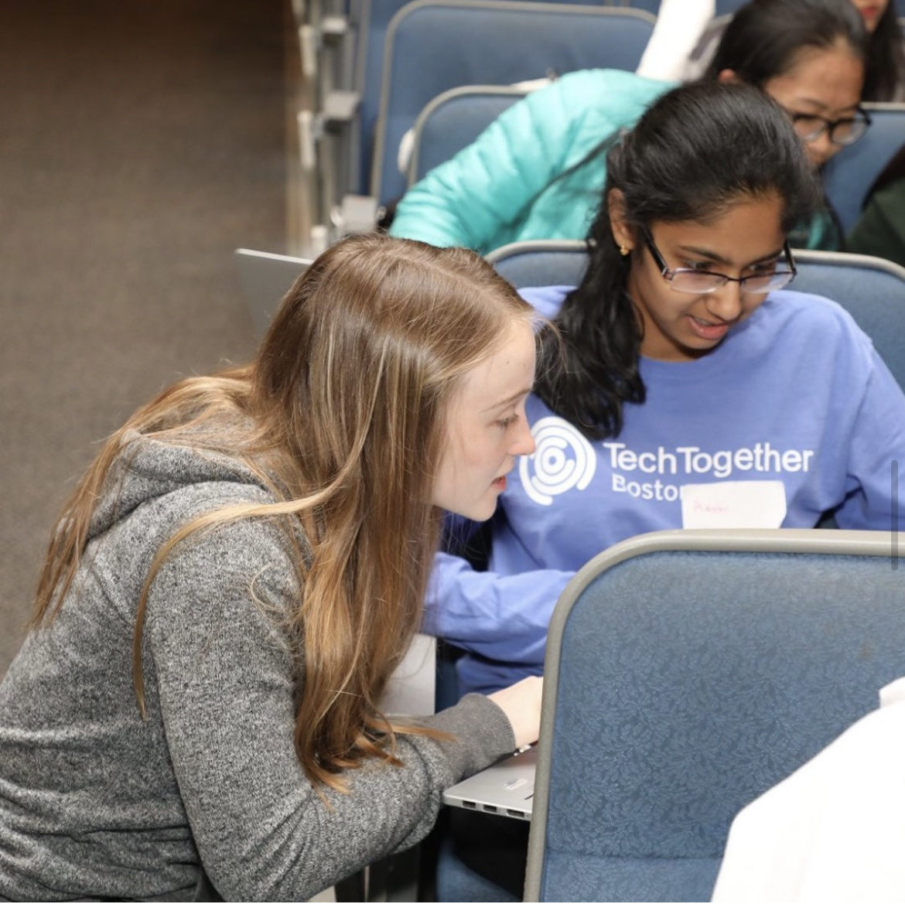
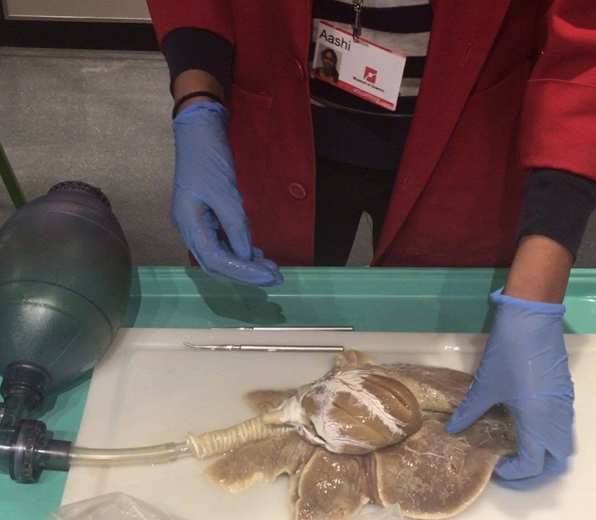
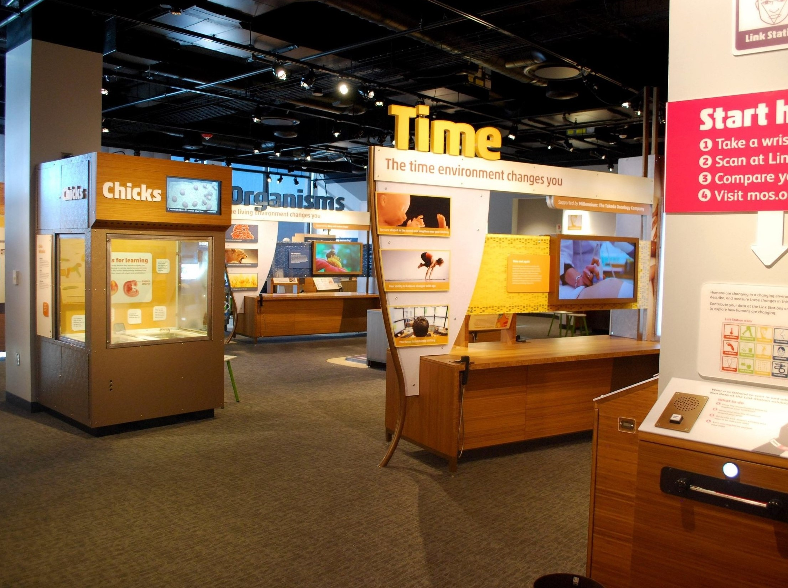

TechTogether is the nation's largest initiative to address the gender inequities in the hackathon community, and it was recently acquired by Major League Hacking. TechTogether Boston, one of seven branches of TechTogether, is a hackathon annually hosted at Boston University that provides women and gender-marginalized individuals the opportunity to create projects and attend workshops.
In 2020, I worked as a Communications Organizer and my responsibilities included planning workshops and mini-events, creating the final hackathon schedule and finalizing logistics, and designing newsletters to send out to the mailing list. In 2021, I joined the Sponsorship Team and secured multiple partnerships, personally raising ~$7k for the hackathon. I was in charge of keeping communication with each company and ensuring that we fulfilled their sponsorship package perks.

During the time that I volunteered at the Museum of Science, I helped create a supportive and engaging environment through positive learning experiences. In late 2018 to mid-2019, I was a Hands-On Laboratory Volunteer, where I offered hands-on, enquiry-based learning experiences for Museum visitors of all ages and exposed them to various topics within laboratory sciences. I primarily worked with laboratory tools, such as microscopes, pipettes, and centrifuges. During the summer of 2019, I landed a role as a Summer Courses Intern at the Museum after which I started volunteering in a different department at the start of the school year. In late 2019 to March 2020 (start of COVID pandemic), I was a Hall of Human Life Volunteer, where I facilitated anatomy related live demonstrations, presentations and hands-on activities for visitors of all ages. The purpose of the Hall of Human Life department is to inspire visitors to think critically, be curious, and explore the science of human health, biology, and behavior. Once COVID restrictions were lifted and the Museum started hiring summer interns again, I landed the summer position as a Program Assistant in 2021.
Overall, these volunteer experiences taught me many personal skills including commitment, reliability, and responsibility. It also allowed me to practice being a facilitator and taught me how to be a leader. Being a committed volunteer helped me land my first two jobs and all these experiences shaped me into the person I am today.

